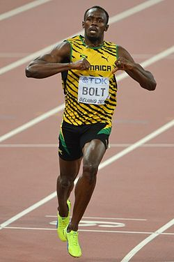
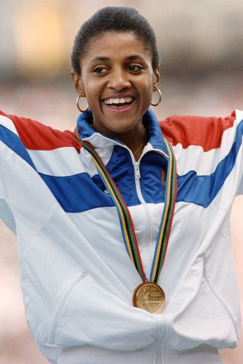

Usain Bolt
Usain Bolt is a Jamaican sprinter and world record holder in the 100m and 200m.
Courtney Dauwalter
Courtney Dauwalter is an American ultramarathon runner known for her exceptional endurance.

Marie-José Pérec
Marie-José Pérec is a French former sprinter and three-time Olympic gold medalist known especially for her dominance in the 200 m and 400 m events.

Eliud Kipchoge
Eliud Kipchoge is a Kenyan Olympic marathon champion renowned for being the first person to run a marathon distance in under two hours.